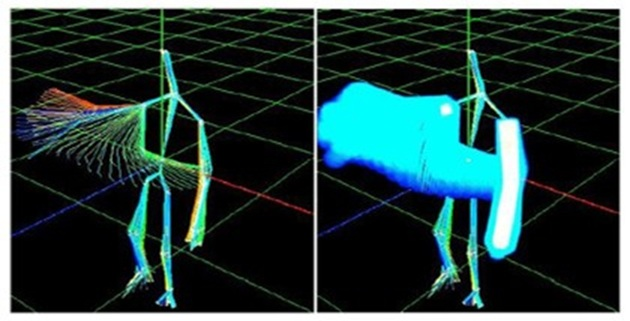
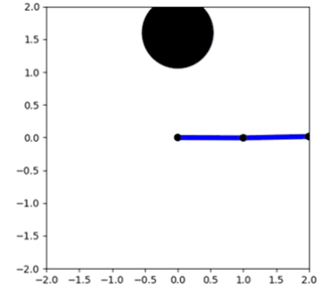
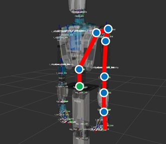
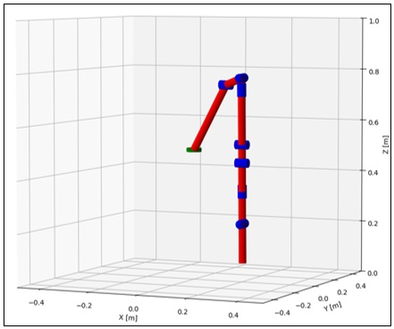

現在，大学院で協働作業のための軌道生成に関する研究を行っています．
協働作業とは人間とロボットが協力して作業を行うことを指します．
なかでも，作業空間や作業時間を共有することが特徴です．
人間とロボットが協働することで，作業の柔軟性や効率性が向上すると期待されています．
しかし，人間とロボットの作業空間を共有するため，接触のリスクが高く，人間の安全性を確保することが課題です．
そこで，本研究では人間との接触を回避しつつ，協働作業を行うための軌道生成手法を提案しています．
具体的には，人間との接触のリスクを定式化し，最適化問題の制約条件として組み込むことで，接触を回避する関節角軌道を生成します．
提案手法の新規性として，接触のリスクを定量的に評価している点が挙げられます．
リスク評価は人間の掃引空間（sweep space）から行っております．
掃引空間とは，人間の手や体が移動した範囲を表す空間であり，
本研究においては，人間との接触のリスクが高い領域を特定するために用います．

人間の掃引空間
冗長自由度を持つロボットの軌道生成を行う場合に，より正確には各関節についての関節角度軌道を生成するために．
私の研究では最適制御の手法を用いています．
これは，軌道を引数に取る目的関数を定義し，それを最小化するような軌道を求める手法です．
目的関数では，軌道の滑らかさや接触のリスクを評価する項を定義しています．
CasADiという最適化ソルバーを用いて最適化問題を解き，生成された軌道をロボットに適用することで，ロボットを制御しています．
図はPythonで作成した，2 Linkのマニピュレータの軌道生成を行うデモです．

軌道生成のデモ
研究では，Seed-Noidという協働ロボットを使用しています．
Seed-Noidは7自由度の腕を2本持つロボットであり，協働作業に適した設計がされています．
Seed-Noidは，関節角度を制御することで，ロボットの腕を自由に動かすことができます．
基本的な処理はROSパッケージとして提供されており，シミュレーション環境での動作確認が容易です．
また，実機の関節角度を取得するためのノードも提供されており，実機での動作確認も可能です．
軌道生成の計算を行う際には，右図のようなシミュレーションモデルを使用しています．
このモデルは，実機の関節角度を取得するためのノードと連携しており，シミュレーション環境での動作確認が可能です．

実機の関節

シミュレーションモデル
※ この記事は，現在書きかけです．